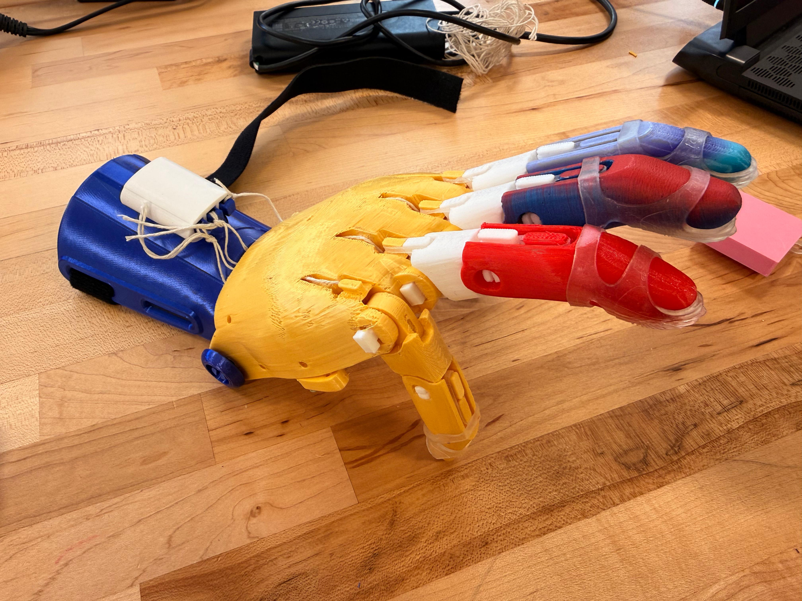
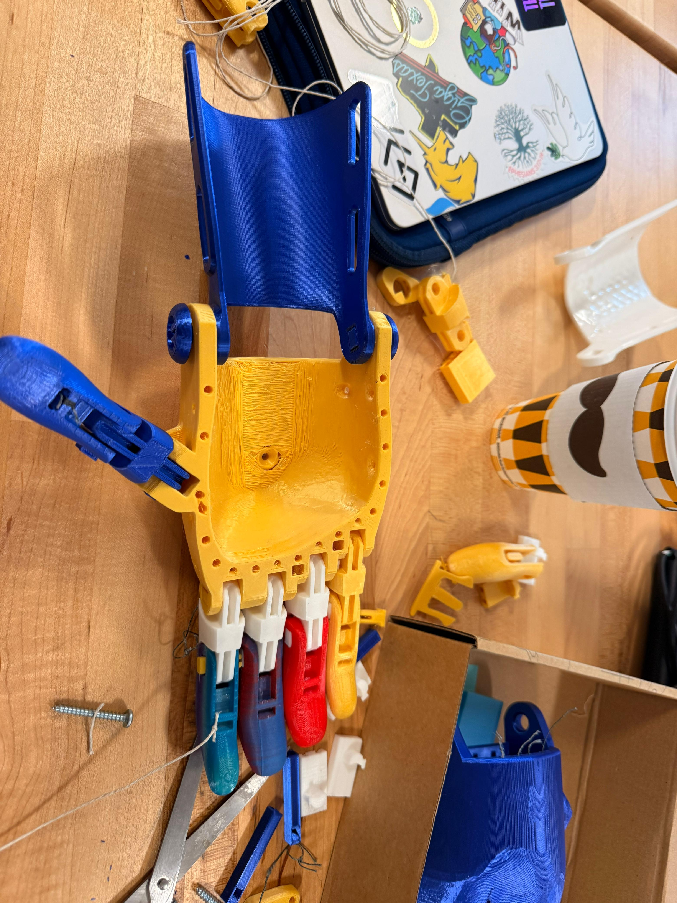
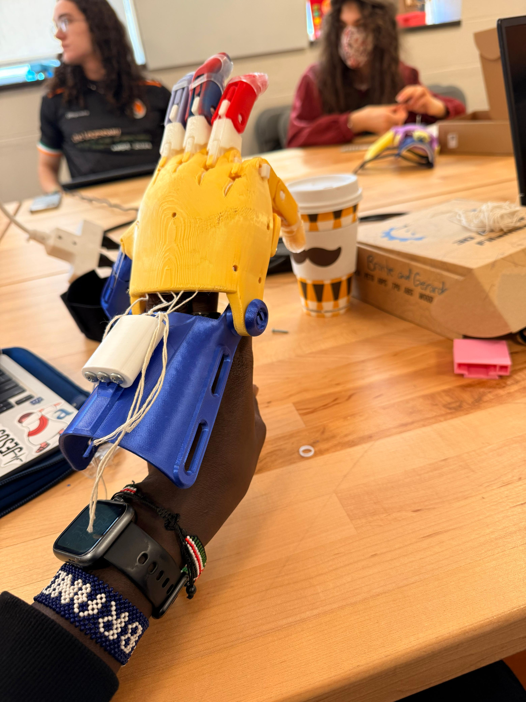

Design Project #4 — Open-source Assistive Technology
A collaborative engineering project focused on building a 150% scale e-NABLE Phoenix Hand, evaluating open-source documentation, improving assembly guidance, and reflecting on inclusive design.
Project Overview
For this project, I explored the open-source assistive technology ecosystem through the e-NABLE Phoenix Hand. The assignment combined fabrication, documentation analysis, usability thinking, and ethical reflection. Instead of only printing a prosthetic hand, I also evaluated how open-source knowledge is shared, where existing documentation falls short, and how design can better support accessibility and real-world use.
Part 1: Ecosystem Exploration
The open-source assistive technology ecosystem includes platforms like e-NABLE, NIH 3D Print Exchange, and Makers Making Change, each offering different strengths. E-NABLE focuses on prosthetic devices and provides a more direct, user-centered experience. NIH offers a structured repository but requires more navigation. Makers Making Change includes a broader range of assistive tools beyond prosthetics. Exploring these platforms showed that while access to files is widespread, usability and organization vary significantly. A well-designed repository should prioritize task-based organization, ease of navigation, and beginner accessibility to ensure that users can effectively find, understand, and build assistive devices.
Documentation Evaluation
The documentation across platforms was useful but inconsistent. While most sources included basic instructions and materials, they often lacked clarity in critical steps such as string tensioning and alignment. Visual documentation was helpful but sometimes insufficient, especially for internal components. Troubleshooting guidance was minimal, leaving users to rely on trial and error. Accessibility was also limited, with few translations or simplified explanations for beginners. Overall, the documentation assumed prior technical knowledge, which creates a barrier for new users. Improving clarity, visual guidance, and troubleshooting would significantly enhance the usability of these open-source resources.
Part 2: 3D Printing Process
The prosthetic hand was printed using PLA on a Prusa Mini+, scaled to 150%. While the external surfaces printed cleanly, the internal palm structure showed rough layering and stringing. This likely resulted from insufficient supports and minor temperature inconsistencies. Printing complex geometries revealed how internal cavities are more difficult to produce accurately than external surfaces. This process highlighted the importance of optimizing print settings, especially for structures with hidden components. It also reinforced that digital models do not always translate perfectly into physical objects, requiring iteration and adjustment to achieve a functional and reliable print.
Part 3: Assembly & Functionality
The assembly process was challenging, particularly when routing and tensioning the tendon strings. Small misalignments caused uneven finger movement, and the strings easily tangled inside the palm. Despite these challenges, the prosthetic successfully demonstrated basic functionality. The fingers closed when tension was applied, and the wrist-driven mechanism allowed controlled motion. However, grip strength was limited, and consistency across fingers was difficult to maintain. This showed that even when a design works conceptually, real-world performance depends heavily on precise assembly and material behavior.
Part 4: Limitations & Improvements
The prosthetic hand has several limitations, including uneven finger motion, limited grip strength, and internal friction within the palm structure. The bulky design also reduces precision, making fine motor tasks difficult. These issues stem from both design constraints and assembly challenges. To improve the device, I would redesign the string routing system to ensure consistent tension, reduce friction points within the palm, and refine the overall geometry for better ergonomics. Adding more intuitive assembly features could also improve usability. These improvements would make the prosthetic more reliable and accessible for users.
Part 5: Improving Documentation
The most difficult steps in the assembly process were tendon routing, finger alignment, and tension calibration. Existing documentation did not clearly explain these steps, especially for beginners. To improve this, I created clearer, step-by-step instructions supported by visual references. I focused on simplifying complex processes and highlighting common mistakes. By breaking down each step and showing correct configurations, I aimed to reduce ambiguity. This approach makes the documentation more accessible and helps users better understand both the process and the expected outcome.
Part 6: Peer Testing Reflection
Peer testing revealed that many assumptions I made during documentation were incorrect. Users struggled most with determining the correct string tension, as this was not clearly defined in the instructions. I initially believed this would be intuitive, but it required explicit explanation. Observing users interact with my documentation showed that clarity is not just about instructions, but also about expectations. Based on this feedback, I revised my documentation to include clearer visuals and more detailed explanations. This process emphasized the importance of testing documentation with real users.
Part 7: Design Concept
For the modification, I focused on enabling smartphone use. This task requires both stability and precision, making it a meaningful extension of the prosthetic’s capabilities. I designed a concept that allows the hand to hold a phone while still enabling interaction, such as tapping or swiping. The goal was to create a simple, lightweight attachment that enhances usability without restricting movement. This design reflects real-world needs, as smartphones are essential tools for communication and daily tasks.
Part 8: SIT Method & Iteration
I applied the Systematic Inventive Thinking principle of Task Unification by designing the prosthetic to both hold and interact with the phone. Instead of adding separate tools, the hand itself performs multiple functions. Initial testing showed that while the design improved stability, it reduced flexibility. This highlighted a tradeoff between control and mobility. Future iterations would focus on reducing bulk and improving ergonomic alignment. This process demonstrated how design is iterative and requires balancing competing constraints to achieve optimal functionality.
Part 9: Ethical Reflection
Open-source assistive technology provides significant benefits by making prosthetic designs more accessible and affordable. It allows individuals and communities to create solutions without relying on expensive medical systems. However, it also raises ethical concerns. Not everyone has access to 3D printers, materials, or technical knowledge, which limits who can actually benefit. Additionally, volunteer-driven models may lack consistency, quality control, and long-term support. This highlights the need for inclusive design approaches that consider not just access to information, but access to resources and usability.
Part 10: Contribution & Impact
As part of this project, I contributed improved documentation focusing on the most challenging assembly steps. By providing clearer visuals and troubleshooting guidance, my work helps future users better understand the process and avoid common mistakes. This contribution aligns with the collaborative nature of open-source communities, where knowledge is shared and continuously improved. Even small contributions can have a meaningful impact by making complex systems more accessible and easier to use.
Part 11: Capstone Bridge
This project revealed that one of the biggest challenges in assistive technology is not just design, but usability and accessibility. For my capstone, I want to focus on creating assistive solutions that are both functional and easy to understand. This includes improving documentation, simplifying assembly, and designing with real users in mind. By combining engineering with user-centered design, I aim to develop solutions that are practical, scalable, and inclusive. This direction builds on the lessons learned in this project and extends them into a broader impact.
Gallery




Quick Facts
Course: ENGR11
Project: e-NABLE Phoenix Hand
Material: PLA
Printer: Prusa Mini+
Scale: 150%
Key Requirements
• Explore e-NABLE, NIH, and Makers Making Change
• 3D print and assemble the prosthetic hand
• Evaluate and improve existing documentation
• Design a task-specific modification
• Reflect on inclusive design and ethics
What I Learned
• Documentation quality strongly affects accessibility
• Small assembly errors can change mechanical performance
• Iteration matters in both design and communication
• Open-source access does not automatically mean equal usability
Why It Matters
This project connected fabrication, documentation, and inclusive design into one complete workflow. It showed that assistive technology is not only about building devices, but also about making them understandable, usable, and accessible to the people who need them.